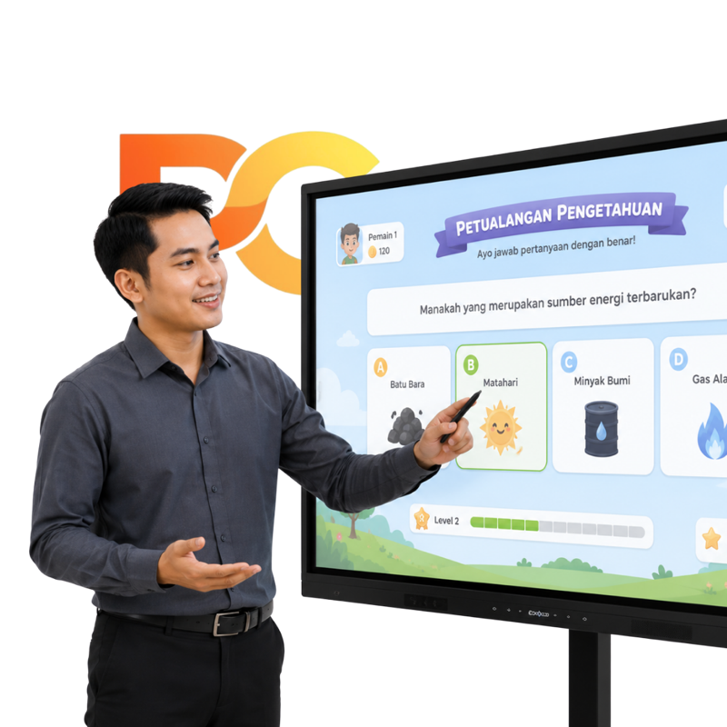
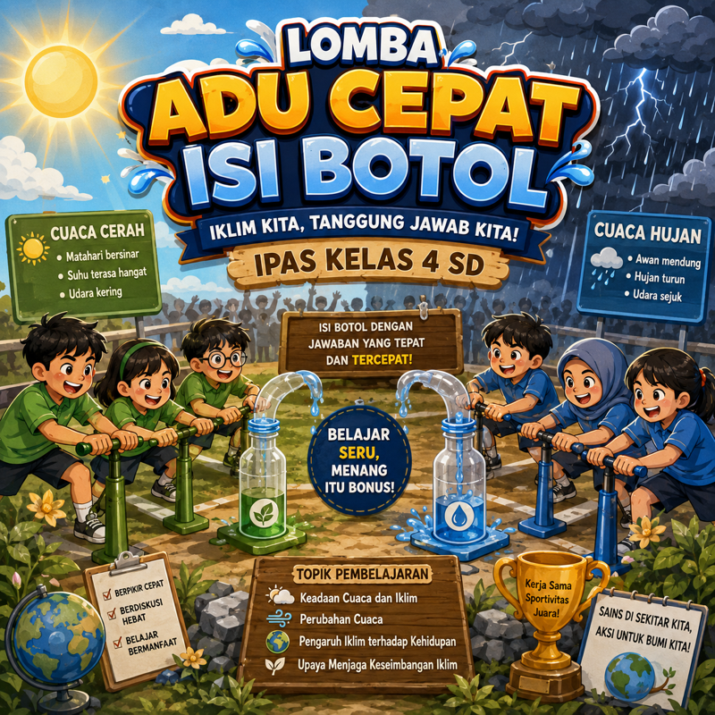
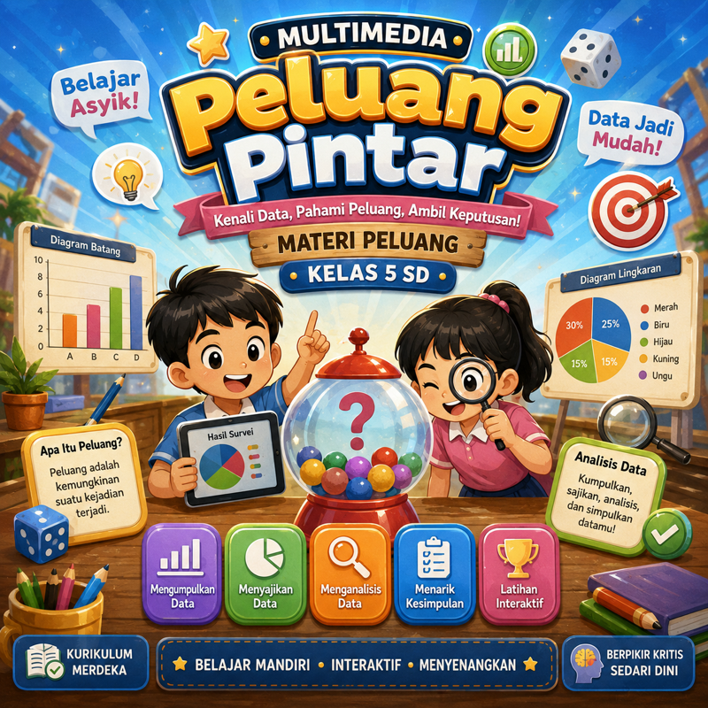

Belajar, Berkarya, Berdampak.
Pendidik Cendekia mewadahi para pendidik untuk berbagi dan memublikasikan karyanya, agar dapat dimanfaatkan banyak orang dalam mempercepat akselerasi pembelajaran digital. Karya-karya berikut merupakan hasil dari peserta pelatihan Pendidik Cendekia.
Karya-karya pilihan dari peserta pelatihan, siap Anda pelajari dan jadikan inspirasi pembelajaran digital.

Disusun oleh: Ibu Rina (SD Inpres Soasio)
Gim interaktif untuk melatih operasi hitung dasar dengan cara yang menyenangkan.
Lihat Karya
Disusun oleh: Ibu Sari (SDN Gamping)
Permainan adu cepat yang membahas materi perubahan iklim untuk siswa IPAS SD.
Lihat Karya
Disusun oleh: Bapak Dedi (SMPN 2 Bantul)
Media interaktif untuk memahami analisis data dan peluang pada Matematika SD.
Lihat KaryaPUBLISH KARYA
Pendidik Cendekia memfasilitasi Anda untuk menerbitkan karya pembelajaran, seperti gim, multimedia interaktif, modul, atau kuis digital. Kirimkan karya yang sudah jadi, atau konsultasikan ide Anda dan biarkan kami mendampingi dari nol hingga siap digunakan.